為一有限空間
為一指數集合
為空間中的一個非空子集的有序元組
即 對應的 Voronoi Cell，空間中任意點到
而 Voronoi Diagram 即所有 Voronoi Cell 的集合
Voronoi Diagram 是由俄國數學家 Georgy Voronoy 所定義的空間分割圖，在許多領域都有廣泛的應用。
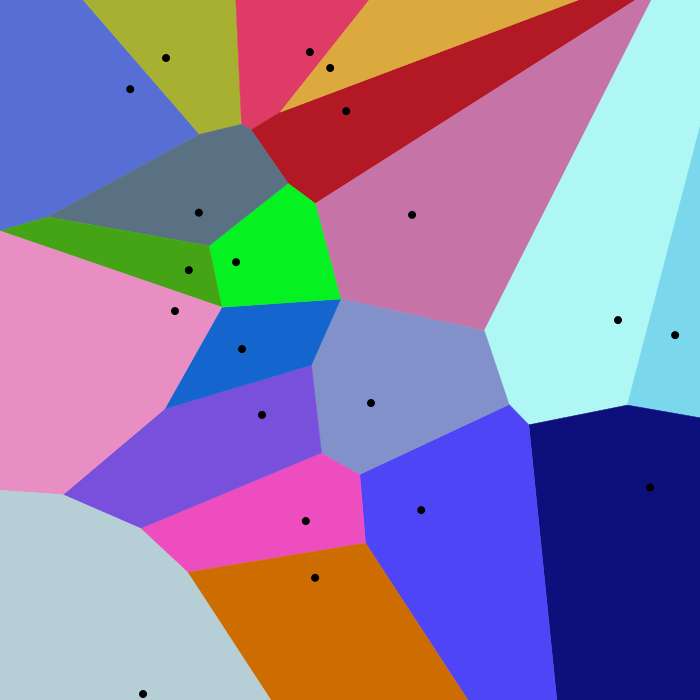
Voronoi Diagram日常生活及大自然中遍及了 Voronoi Diagram，如細胞分佈、葉脈紋路、長頸鹿和龜甲斑紋、商家勢力範圍、消防車負責區域…等。
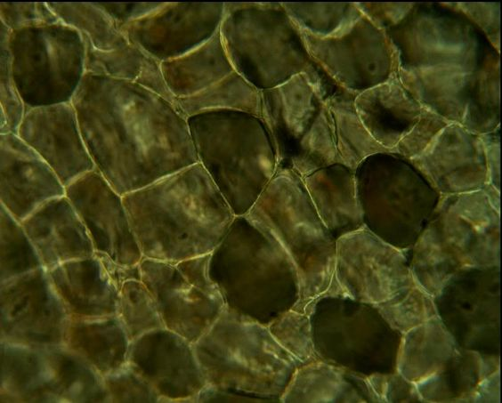
細胞分佈葉脈紋路
長頸鹿斑紋
龜甲斑紋
拋物線的構成要素有準線、焦點、對稱軸、頂點及焦距。
定義
設平面上有一線段 L、定點 F，其中定點 F 不再線段 L 上，則平面上所有到線段 L 的距離與到定點 F 的距離相等的點集合所形成的圖形即為拋物線。
線段 L 即為準線。
定點 F 即為焦點。
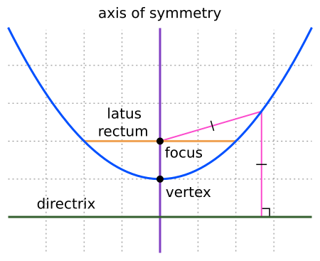
準線 Directrix
平面上的一直線
焦點 Focus
平面上一點
對稱軸 Axis of Symmetry
過焦點並與準線垂直的直線
頂點 Vertex
對稱軸與拋物線的交點
焦距 Focal Length
為焦點到頂點的距離
標準方程式（開口向上）
焦點
準線
焦距
拋物線方程式
空間中任兩點即可形成一垂直平分線。
定義
設空間中有兩點形成線段 L，經過線段 L 中點且垂直線段 L 的直線即為此兩點的垂直平分線。
垂直平分線上的任一點到線段 L 兩端點的距離皆相等。
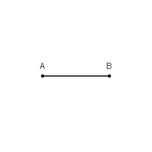
在任意數量的點集所組成的空間中，空間中的任意位置被歸類於最接近的點並形成 Voronoi Cell，由於 Voronoi Cell 的分界線是由每兩個點的垂直平分線組成，固 Voronoi Diagram 可用於解決最靠近、最短距離、路徑搜尋相關問題。
定義
為一有限空間
 為空間中一任意點
為空間中一任意點
為一指數集合
為空間中的一個非空子集的有序元組
即 對應的 Voronoi Cell，空間中任意點到  的距離不大於到 的距離
的距離不大於到 的距離
而 Voronoi Diagram 即所有 Voronoi Cell 的集合
Fortune’s Algorithm 是建立 Voronoi Diagram 時可使用的演算法之一，最初由 Steven Fortune 在 1986 年的論文 A Sweepline Algorithm for Voronoi Diagrams 中發表，是一種掃描線演算法，其時間複雜度為 、空間複雜度為 。
演算法使用了兩條掃描線作為計算依據，Sweep Line 及 Beach Line，這兩條掃描線會隨著演算過程而移動。
掃描過程中需要不斷的追蹤 Beach Line，有拋物線段新增時會產生 Voronoi Cell 邊界，有拋物線段消失時則產生 Voronoi Cel 頂點。
Sweep Line
Sweep Line 是一條垂直或水平直線，在這次的實作中選擇使用水平直線，並由上到下進行移動。
在 Sweep Line 的移動過程中，每經過一輸入點，會將該輸入點納入 Beach Line 的計算，形成一開口向上的拋物線段，而其他尚未經過的點則不會干涉已產生的 Voronoi Diagram。
Beach Line
每個被 Sweep Line 經過的輸入點，會形成拋物線的焦點，而 Sweep Line 則被當作此焦點的準線，形成拋物線。
Beach Line 則由所有被納入計算的輸入點形成的拋物線組成。
Site Event (Edge Event)
當 Sweep Line 經過任一輸入點時發生，經過的輸入點會納入計算並改變 Beach Line，形成 Voronoi Cell 邊界。
Circle Event (Vertex Event)
當 Beach Line 上任一拋物線段消失時發生，形成 Voronoi Cell 頂點。
演算法圖像化過程 Algorithm Image Processing
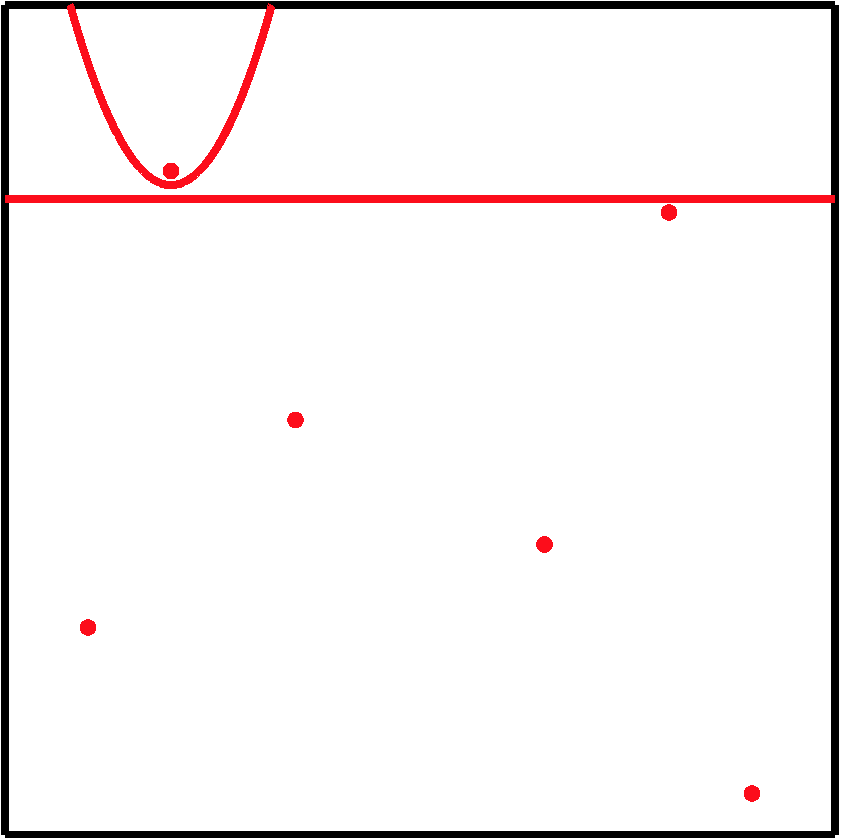
Site Event，加入拋物線 P0，P0 為第一個拋物線所以沒有 Edge 產生，當前 Beach Line 變為 P0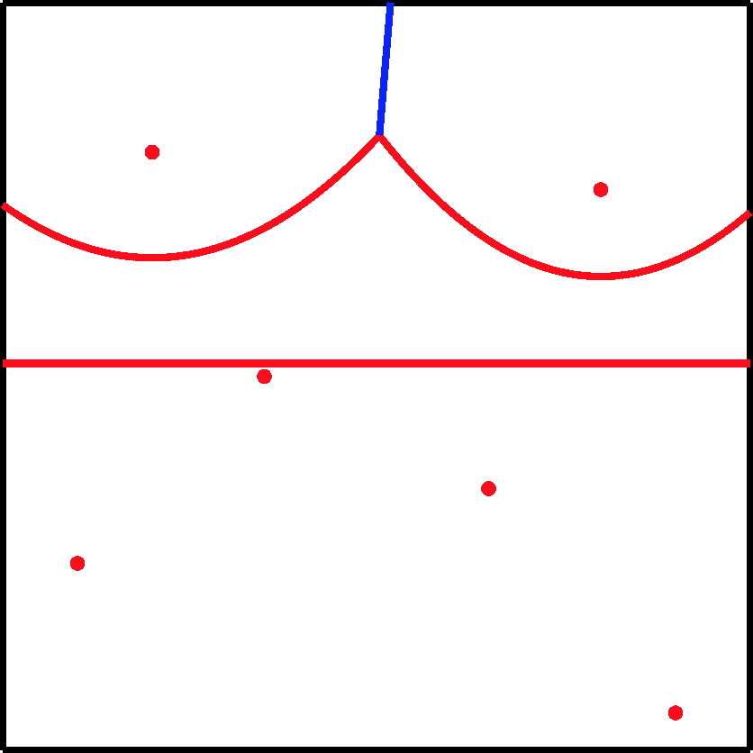
Site Event，加入拋物線 P1，產生 Edge，當前 Beach Line 變為 P0 P1 P0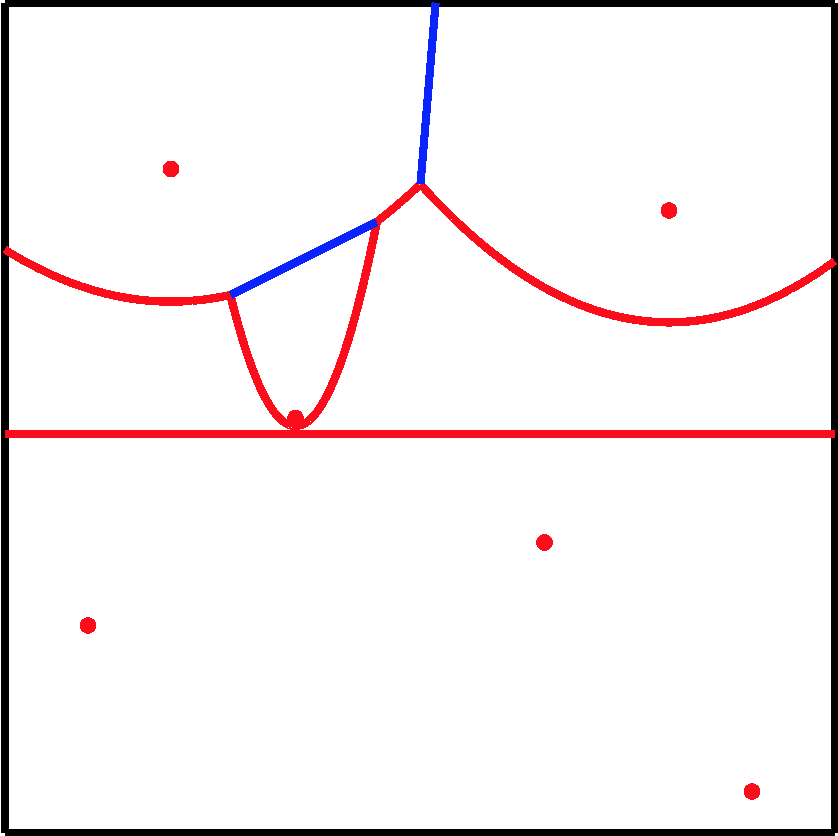
Site Event，加入拋物線 P2，產生 Edge，當前 Beach Line 變為 P0 P2 P0 P1 P0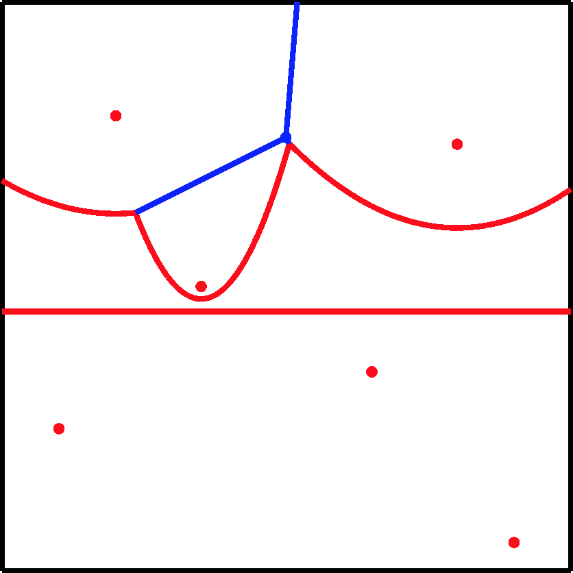
Circle Event，P2 P1 間的拋物線 P0 消失，產生 Vertex，當前 Beach Line 變為 P0 P2 P1 P0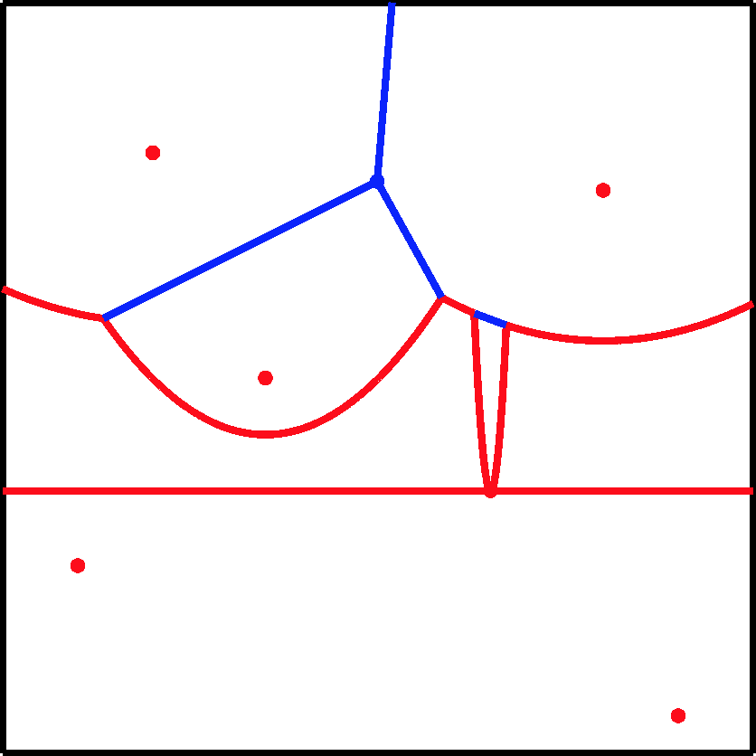
Site Event，加入拋物線 P3，產生 Edge，當前 當前 Beach Line 變為 P0 P2 P1 P3 P1 P0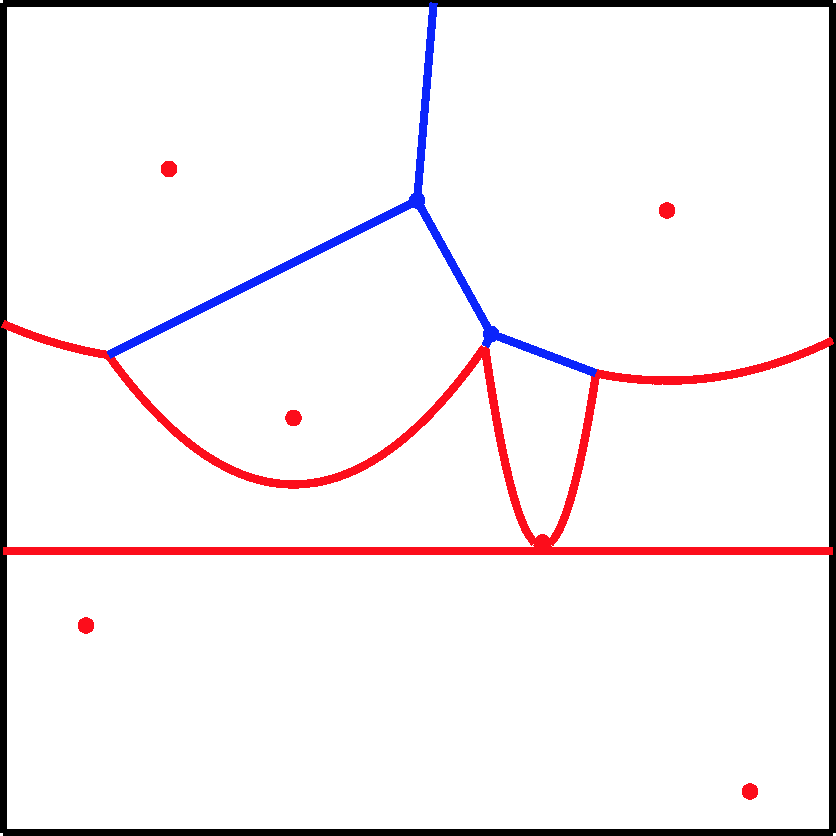
Circle Event，P2 P3 間的拋物線 P1 消失，產生 Vertex，當前 Beach Line 變為 P0 P2 P3 P1 P0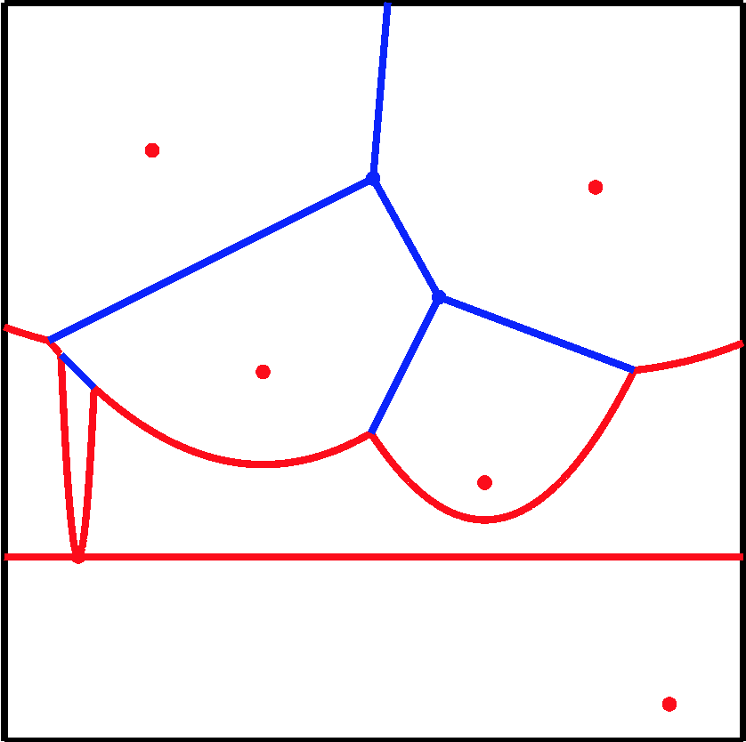
Site Event，加入拋物線 P4，產生 Edge，當前 Beach Line 變為 P0 P2 P4 P2 P3 P1 P0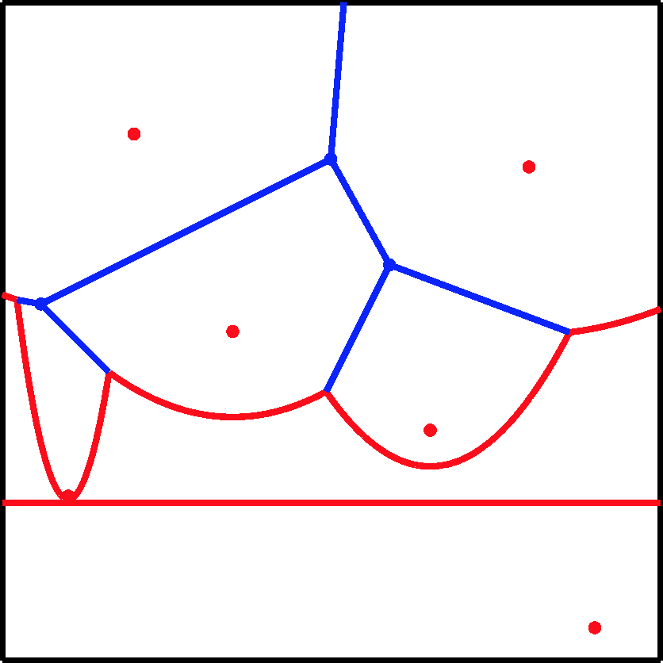
Circle Event，P0 P4 間的拋物線 P2 消失，產生 Vertex，當前 Beach Line 變為 P0 P4 P2 P3 P1 P0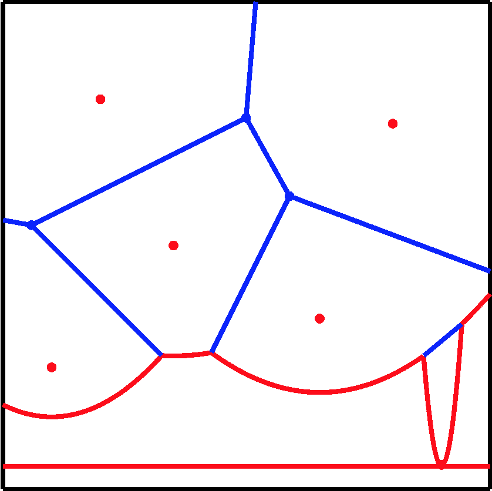
Site Event，加入拋物線 P5，產生 Edge，當前 Beach Line 變為 P0 P4 P2 P3 P5 P3 P1 P0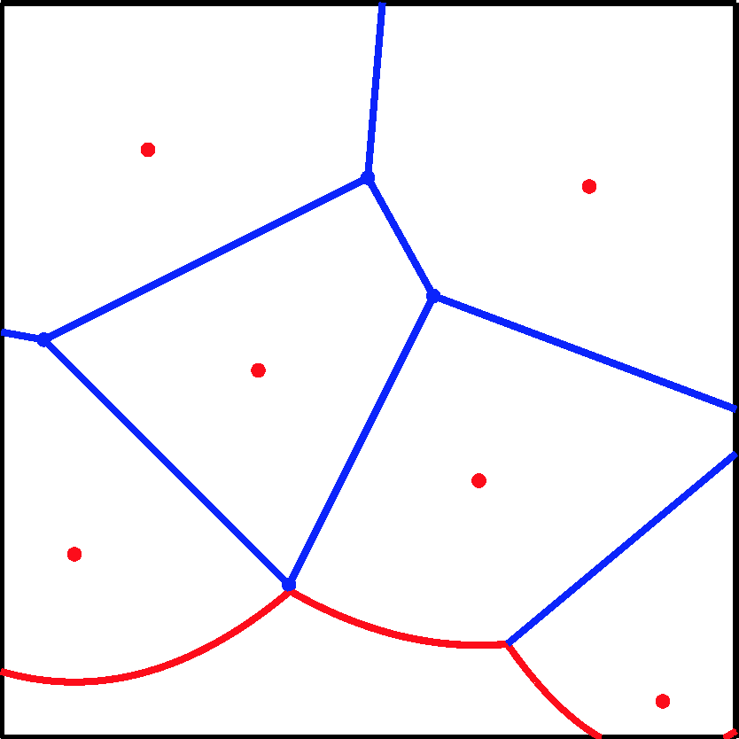
Circle Event，P4 P3 間拋物線 P2 消失，產生 Vertex，當前 Beach Line 變為 P0 P4 P3 P5 P3 P1 P0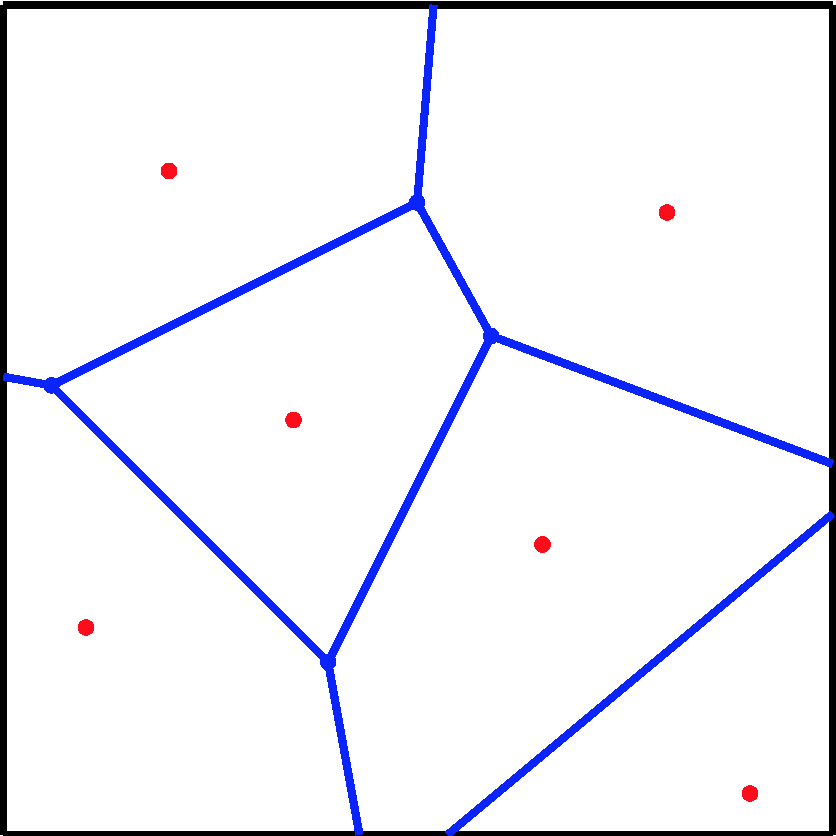
Voronoi Diagram 完成Voronoi Diagram 動態完整過程
高階虛擬碼 High-Level Pseudo Code
create the event queue with site events for each input points
while the event queue is not empty
if the first event in the event queue is a site event
add the new parabola to the beach line
if the first event in the event queue is a circle event
add the new vertex and squeeze the parabola
finish any remaining edges低階虛擬碼 Low-Level Pseudo Code
VoronoiDiagram(Input Points)
{
let E be the event queue
create E with site events for each input points
sort E by y-coordinate (depends on the direction of the sweep line)
while E is not empty
{
let e be the first event in E
if e is Site Event
AddSiteEvent(e.site)
if e is Circle Event
AddCircleEvent(e)
}
finish the remaining edges
}
AddSiteEvent(Site site)
{
let p be the parabola above the site
create parabolas p0, p1, and p2
p0.focus = p2.focus = p.focus
p1.focus = site
create new edges el, and er
el is the edge between p0 and p1
er is the edge between p1 and p2
replace p by the sequence p0, p1, p2
CheckCircleEvent(p0)
CheckCircleEvent(p2)
}
AddCircleEvent(Event e)
{
remove e.parabola
create new vertex e.vertex
create new edge between e.parabola.leftParabola and e.parabola.rightParabola
CheckCircleEvent(e.parabola.leftParabola)
CheckCircleEvent(e.parabola.rightParabola)
}
CheckCircleEvent(Parabola p)
{
let el and er be the edges of p
if there is intersect point between el and er
let e be the new circle event
e.parabola = p
e.vertex = intersect point
e.y = target sweep line value
add e to the event queue E
}此腳本用於在 Unity 中使用 Gizmos 表現 Voronoi Diagram 的演算過程
Gizmos
Show Border：顯示邊界
Show Input Points：顯示輸入座標
Show Sweep Line：顯示 Sweep Line
Show Beach Line：顯示 Beach Line
Show Edges：顯示 Voronoi Diagram Edge
Show Vertices：顯示 Voronoi Diagram Vertex
Voronoi Diagram Parameters
Width：Voronoi Diagram 寬度
Height：Voronoi Diagram 高度
Sweep Line：Sweep Line 位置
Input Points：Voronoi Diagram 輸入座標
Inspector Buttons
Input Point Numbers：隨機輸入座標數量
Reset Sweep Line Animation：重設 Sweep Line 至圖像頂端
Play Sweep Line Animation：在 Play Mode 下播放演算過程動畫
Generate Random Input Points：依據 Input Point Numbers 產生隨機輸入座標
Generate Voronoi Diagram：依據現有輸入座標產生 Voronoi Diagram
Generate Random Voronoi Diagram：產生隨機 Voronoi Diagram
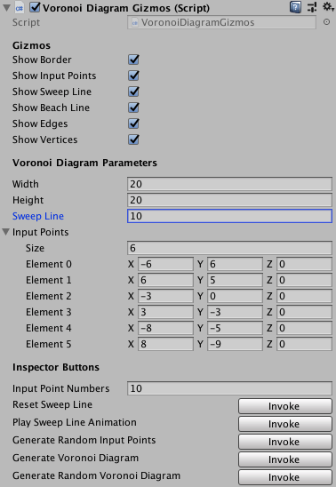
Source Code
ted10401/VoronoiDiagram
Voronoi diagram – Wikipedia
Georgy Voronoy – Wikipedia
Parabola – Wikipedia
Bisection – Wikipedia
Fortune’s algorithm – Wikipedia
Fortune’s algorithm and implementation
Fortunes Algorithm: An intuitive explanation
AMS :: Feature Column from the AMS
Fortune’s Algorithm (for Voronoi diagrams)
Fortune.pdf